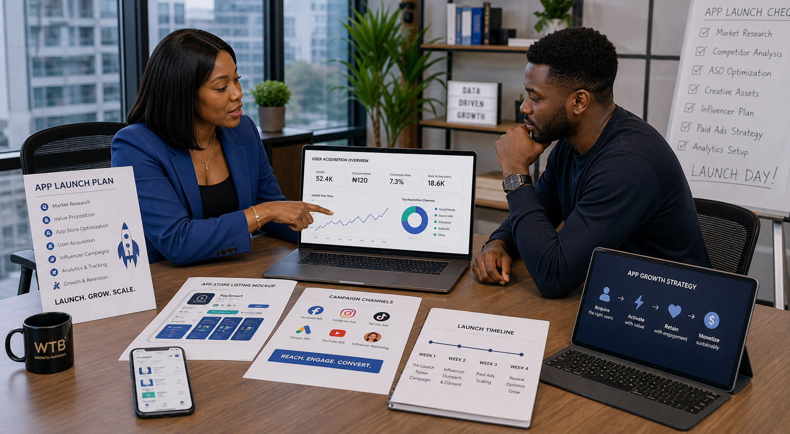
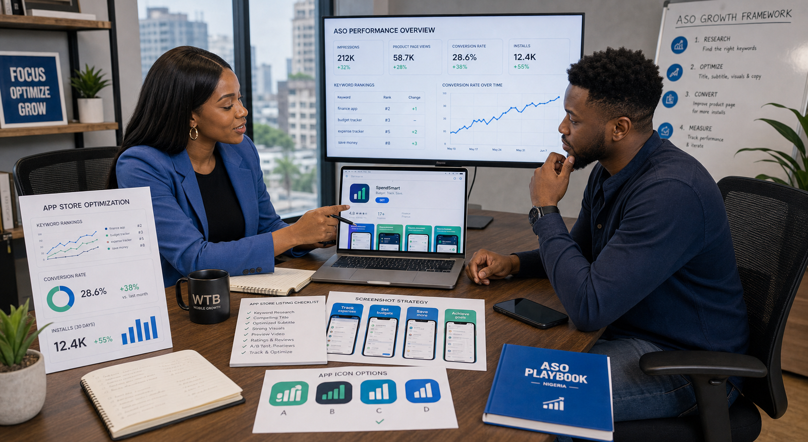

App messaging and market story
Clearer language for what the app does, who it helps, why it matters, and what makes it worth trying now.
App marketing agency Abuja
WTB helps app founders and product teams plan launch visibility, user acquisition, app messaging, content direction, paid traffic, and cleaner growth structure so the app does not disappear after launch week.
An app marketing agency in Nigeria should help your business launch the app with clearer positioning, stronger user acquisition, better app store support, and a more believable route from awareness to installs, onboarding, and retention.
What app founders usually face
Many app teams spend months building features, flows, and screens, then treat marketing like a final-week announcement. That usually creates a weak launch because the market message, app store setup, landing-page trust, and user acquisition logic were never properly shaped.
WTB helps your business think beyond “we launched” and move toward “the right people actually found it, understood it, and installed it.”
If your main problem is app store visibility and conversion, review our App Store Optimization Nigeria page too.

What we handle
The work is not only to get installs. The work is to get the right installs, from the right message, into a better first-use experience.
Clearer language for what the app does, who it helps, why it matters, and what makes it worth trying now.
Launch sequencing, campaign priorities, landing-page support, pre-launch interest, and a smarter first visibility push.
Meta Ads, Google Ads, influencer-led push, and mixed paid traffic support for app installs and app discovery.
App store screenshots, copy direction, conversion messaging, and listing support that helps the page sell the install better.
Launch content, product demos, explainer content, creator hooks, and campaign messaging that make the app easier to understand fast.
Install patterns, traffic quality, early conversion signals, and clearer decisions about what the product should push harder next.
Best fit
This page is a strong fit for startup apps, fintech apps, edtech apps, ecommerce apps, booking apps, productivity tools, and product teams that need more than just run some ads.
If your app is AI-led, our Marketing Agency for AI Startups page is the closer fit. If your main job right now is market positioning for a young company, review our Startup Marketing Agency Nigeria page too.

Quick answers
An app marketing agency in Nigeria should help with app launch strategy, user acquisition, paid ads, store listing support, app messaging, landing pages, influencer support, and growth reporting.
This page is best for app founders, product teams, startup builders, and mobile businesses that need stronger app distribution and cleaner user growth in Nigeria.
App marketing usually requires more focus on installs, activation, onboarding, app store conversion, retention signals, and paid user acquisition than generic business promotion.
Launching an app?
We can help you tighten the app story, shape launch channels, improve app listing support, and build a smarter growth path after the first campaign starts.
Latest marketing reads
New and useful reads for Nigerian brands planning SEO, ads, AI search visibility, WhatsApp follow-up, and smarter marketing budgets.